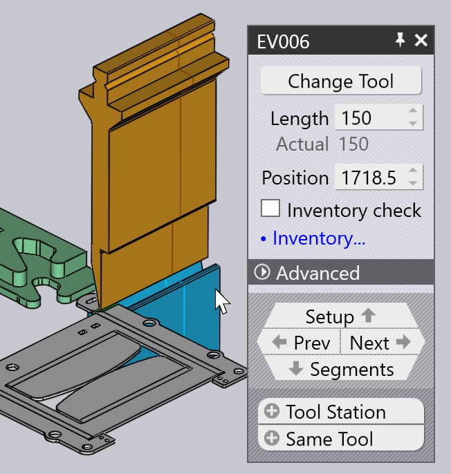

Hajlítási adatok létrehozása
A hajlítási modul segítségével élhajlítási technológiai adatokat hozhat létre egy lemezalkatrészhez. Ezt a műveletet úgy is nevezik, hogy az alkatrész felszerszámozása hajlításhoz. Tegyük fel, hogy már telepített egy gépet, konfigurálta a szerszámállományt és importált egy CAD alkatrészt (2D vagy 3D):

Átkapcsolás CAM hajlításra
Most az alkatrész felszerszámozható hajlításhoz a B gomb megnyomásával. Az alkatrész az alapértelmezett hajlítógéppel van felszerszámozva, amely a legutóbb használt élhajlítógép. A szerszámsorrend, a hajlítási beállítások és az ütközési pozíciók kiszámításra kerülnek; a következő eredményt kell látnia:

Ha nincs hiba, akkor létrejön az alkatrész NC programja (és esetleg a beállítási adatlap) és elmentésre kerül a géphez beállított kimeneti mappába. Íme egy részlet egy tipikus alkatrész-beállításból: sheet[1] (más néven hajlítási jelentést).

| Lásd még a Munkafolyamat panelt, amely a W gomb megnyomásával érhető el. Ez nagyobb ellenőrzést biztosít az élhajlítási technológiai adatok létrehozásakor, valamint lehetőségeket kínál az alkatrész útvonalának megtervezéséhez lézer CAM vagy táblaterv segítségével. |
További műveletek
Az alábbiakban röviden összefoglaljuk azokat a műveleteket, amelyeket elvégezhet, miután az alkatrész fel van szerszámozva hajlításra.
-
Ha rákattint a Spacebar gombra, elindul a hajlítás szimulációja. A Hajlítás navigátor szimulációs vezérlőivel is elindíthatja, leállíthatja vagy visszatekerheti a szimulációt:

-
Ha bármilyen figyelmeztetés vagy hibaüzenet jelenik meg, azok azok a Hajlítás navigátor oldalon jelennek meg és a megfelelő cellákra kattintva megtekintheti azokat, illetve megoldhatja az azokat előidéző problémákat:

-
Szerkesztheti a hajlítószerszámokat (bélyegeket és matricákat), az ütközők beállításait vagy a szögmérési beállításokat, ha közvetlenül rákattint az adott objektumra a szimulációs nézetben:
 -
A gépet úgy módosíthatja, hogy az alkatrész alatti fülön a gép nevére kattint és egy másik gépet választ:

-
Kattintson a bal oldali eszköztáron található Beállítások
 ikonra az egyes hajlítások további beállításainak szerkesztéséhez (vagy a hajlítógéphez, illetve a teljes TecZone Bend alkalmazáshoz használt alapértelmezett beállítások szerkesztéséhez).
ikonra az egyes hajlítások további beállításainak szerkesztéséhez (vagy a hajlítógéphez, illetve a teljes TecZone Bend alkalmazáshoz használt alapértelmezett beállítások szerkesztéséhez). -
Kattintson a bal oldali eszköztáron található
 Kijelzés ikonra a gép nézetének szerkesztéséhez – be- és kikapcsolhatja a kiegészítő alkatrészek, például a matricavezető sín, a hajlító nyomógerenda és az ütközőujj alátámasztó rendszer megjelenítését. Különböző komponenseket áttetszővé is tehet.
Kijelzés ikonra a gép nézetének szerkesztéséhez – be- és kikapcsolhatja a kiegészítő alkatrészek, például a matricavezető sín, a hajlító nyomógerenda és az ütközőujj alátámasztó rendszer megjelenítését. Különböző komponenseket áttetszővé is tehet.
Ha a hajlítóprogram hibátlanul elkészült, akkor a rendszer automatikusan létrehozza az alkatrész NC programját, valamint a hajlításhoz szükséges beállítási adatlapot. A hajlítás kimenetek beállítási oldalon beállíthatja, hogy az alkatrész NC programja és a beállítási adatlap automatikusan létrejöjjön-e, valamint konfigurálhatja ezeknek a kimeneteknek a rendeltetési helyét és a jelentések formátumát. Ha kód létrejött, akkor a bal oldali eszköztáron található nc-program gomb kiszürkítve jelenik meg:
Ha bármilyen változtatást hajt végre az alkatrészen, ez a gomb újra engedélyezett állapotba kerül és ismét erre az ikonra kattintva (vagy a C gombot megnyomva) újra generálhatja az NC programot.